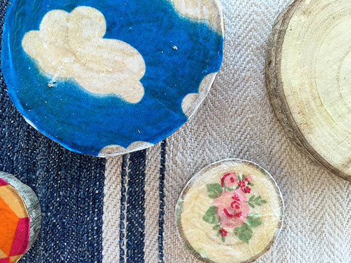
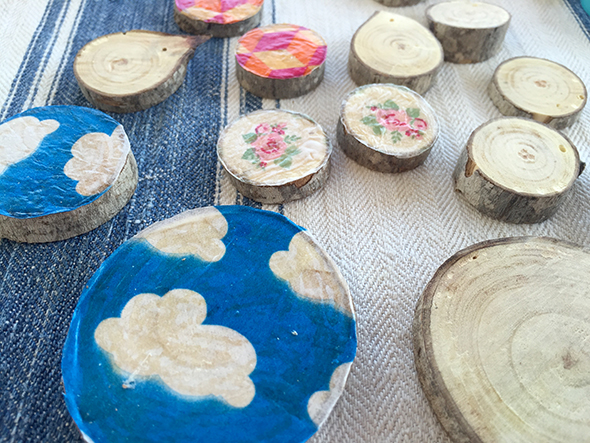

Como en el post hemos hecho unos colgantes. Esta vez von técnica de servilleta ( usando cola blanca).
As in the post we made some pendants. This time colored with the tennis of napkins ( using wooden glue).
Wie in diesem post, haben wir Anhänger gemacht. Dieses mal mit Serviettentechnik ( mit Holzleim).